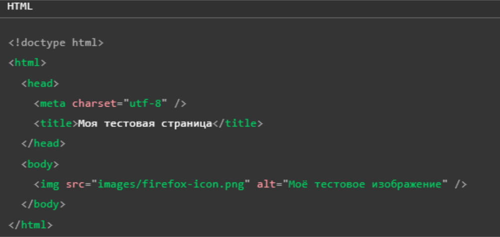

01
HTML
Анатомия HTML документа
HTML
Здесь мы имеем:
<!DOCTYРE html> — доктайп. В прошлом, когда HTML был молод (около 1991/1992), доктайпы должны были выступать в
качестве ссылки на набор правил, которым HTML страница должна была следовать, чтобы считаться хорошим HTML, что
могло означать автоматическую проверку ошибок и другие полезные вещи. Однако в наши дни, никто не заботится об
этом, и они на самом деле просто исторический артефакт, который должен быть включён для того, что бы все работало
правильно. На данный момент это все, что вам нужно знать.
<html html>— элемент . Этот элемент оборачивает весь контент на всей странице, и иногда известен как
корневой элемент.
<head head> — элемент <head>. Этот элемент выступает в качестве контейнера для всего, что вы пожелаете включить
на HTML страницу, но не являющегося контентом, который вы показываете пользователям вашей страницы. К ним
относятся такие вещи, как ключевые слова и описание страницы, которые будут появляться в результатах поиска, CSS
стили нашего контента, кодировка и многое другое.
<body body> — элемент <body>. В нем содержится весь контент, который вы хотите показывать пользователям, когда
они посещают вашу страницу, будь то текст, изображения, видео, игры, проигрываемые аудиодорожки или что-то ещё.
<meta charset="utf-8"> — этот элемент устанавливает UTF-8 кодировку вашего документа, которая включает в себя большинство символов из всех известных человечеству языков. По сути, теперь документ может обрабатывать любой текстовый контент, который вы в него вложите. Нет причин не устанавливать её, так как это может помочь избежать некоторых проблем в дальнейшем.
<title /title> — элемент <title>. Этот элемент устанавливает заголовок для вашей страницы, который является
названием, появляющимся на вкладке браузера загружаемой страницы, и используется для описания страницы, когда вы
добавляете её в закладки/избранное.